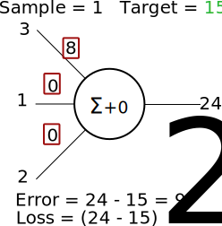
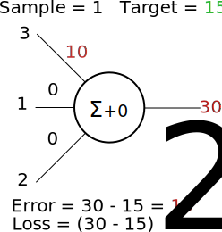

<!DOCTYPE html>
<html lang="en">
  <head>
    <meta charset="utf-8" />
    <meta name="viewport" content="width=device-width, initial-scale=1.0, maximum-scale=1.0, user-scalable=no" />

    <title>reveal-md</title>
    <link rel="stylesheet" href="./css/reveal.css" />
    <link rel="stylesheet" href="./css/theme/league.css" id="theme" />
    <link rel="stylesheet" href="./css/highlight/zenburn.css" />
    <link rel="stylesheet" href="./css/print/paper.css" type="text/css" media="print" />

  </head>
  <body>
    <div class="reveal">
      <div class="slides"><section  data-markdown><script type="text/template"># 2. Neural Networks
</script></section><section  data-markdown><script type="text/template">
## Artificial Neural Networks 

Artificial neural networks are inspired by biological neural networks found in animal brains.


</script></section><section  data-markdown><script type="text/template">
## An artificial neuron
Behaviour is simplified compared to their biological counterparts...


Inputs ($x_{n}$) are multiplied with weights ($w_{n}$) and summed together with the bias ($b$).


</script></section><section  data-markdown><script type="text/template">
## An artificial neuron
Behaviour is simplified compared to their biological counterparts...


$$
x_{1}w_{1}+x_{2}w_{2}+x_{3}w_{3}+b=y
$$

</script></section><section  data-markdown><script type="text/template">
## A Neural Network
A neural network is simply a network of (artificial) neurons with distinct layers. 


</script></section><section  data-markdown><script type="text/template">
## A Neural Network

The network is `acyclic`. Data is fed into the `Input` layer and prediction comes out at the `Output` layer. Any layers in-between is called the `Hidden` layer.


</script></section><section  data-markdown><script type="text/template">
## Getting the right output

Neural network weights ($w$) and bias ($b$) are initialised at random.



The weights are then changed so that our `Output` is closer to the `Target`, minimising our `Error`
</script></section><section  data-markdown><script type="text/template">
## Getting the right output

Let's try increasing $w_{1}$...



You'll see that error is increased from $9$ to $15$.
</script></section><section  data-markdown><script type="text/template">
## Getting the right output

Now try decreasing $w_{1}$...


We've gotten nearer to our target, now we know to keep decreasing the weight.
</script></section><section  data-markdown><script type="text/template">
## Gradient descent

Finding current loss gradient for ALL weights and changing the weights gradually to keep minimising error.


Above example shows the gradient descent process if we only have a single weight.
</script></section><section  data-markdown><script type="text/template">
## Getting the right output (Sample 2)

With the next sample, the `Input` and `Target` has now changed... 


We need to minimise error for all samples.
</script></section><section  data-markdown><script type="text/template">
## Neural Network Training Cycle

<svg xmlns:dc="http://purl.org/dc/elements/1.1/" xmlns:cc="http://creativecommons.org/ns#" xmlns:rdf="http://www.w3.org/1999/02/22-rdf-syntax-ns#" xmlns:svg="http://www.w3.org/2000/svg" xmlns="http://www.w3.org/2000/svg" xmlns:sodipodi="http://sodipodi.sourceforge.net/DTD/sodipodi-0.dtd" xmlns:inkscape="http://www.inkscape.org/namespaces/inkscape" width="119.05259mm" height="92.813629mm" viewBox="0 0 421.83961 328.86717" id="svg2" version="1.1" inkscape:version="0.91 r13725" sodipodi:docname="neuralnetwork-training.svg">
  <defs id="defs4">
    <marker inkscape:isstock="true" style="overflow:visible" id="marker11145" refX="0" refY="0" orient="auto" inkscape:stockid="Arrow1Lend">
      <path transform="matrix(-0.8,0,0,-0.8,-10,0)" style="fill:#000000;fill-opacity:1;fill-rule:evenodd;stroke:#000000;stroke-width:1pt;stroke-opacity:1" d="M 0,0 5,-5 -12.5,0 5,5 0,0 Z" id="path11147" inkscape:connector-curvature="0"></path>
    </marker>
    <marker inkscape:stockid="Arrow1Lend" orient="auto" refY="0" refX="0" id="Arrow1Lend" style="overflow:visible" inkscape:isstock="true" inkscape:collect="always">
      <path id="path7559" d="M 0,0 5,-5 -12.5,0 5,5 0,0 Z" style="fill:#000000;fill-opacity:1;fill-rule:evenodd;stroke:#000000;stroke-width:1pt;stroke-opacity:1" transform="matrix(-0.8,0,0,-0.8,-10,0)" inkscape:connector-curvature="0"></path>
    </marker>
    <marker inkscape:stockid="Arrow1Lend" orient="auto" refY="0" refX="0" id="Arrow1Lend-8" style="overflow:visible" inkscape:isstock="true" inkscape:collect="always">
      <path inkscape:connector-curvature="0" id="path7559-7" d="M 0,0 5,-5 -12.5,0 5,5 0,0 Z" style="fill:#000000;fill-opacity:1;fill-rule:evenodd;stroke:#000000;stroke-width:1pt;stroke-opacity:1" transform="matrix(-0.8,0,0,-0.8,-10,0)"></path>
    </marker>
    <marker inkscape:stockid="Arrow1Lend" orient="auto" refY="0" refX="0" id="Arrow1Lend-8-5" style="overflow:visible" inkscape:isstock="true" inkscape:collect="always">
      <path inkscape:connector-curvature="0" id="path7559-7-2" d="M 0,0 5,-5 -12.5,0 5,5 0,0 Z" style="fill:#000000;fill-opacity:1;fill-rule:evenodd;stroke:#000000;stroke-width:1pt;stroke-opacity:1" transform="matrix(-0.8,0,0,-0.8,-10,0)"></path>
    </marker>
  </defs>
  <sodipodi:namedview id="base" pagecolor="#ffffff" bordercolor="#666666" borderopacity="1.0" inkscape:pageopacity="0.0" inkscape:pageshadow="2" inkscape:zoom="2.8" inkscape:cx="149.54949" inkscape:cy="207.68237" inkscape:document-units="px" inkscape:current-layer="layer3" showgrid="false" fit-margin-top="0" fit-margin-left="0" fit-margin-right="0" fit-margin-bottom="0" inkscape:window-width="2560" inkscape:window-height="1547" inkscape:window-x="1200" inkscape:window-y="0" inkscape:window-maximized="1"></sodipodi:namedview>
  <metadata id="metadata7">
    <rdf:rdf>
      <cc:work rdf:about="">
        <dc:format>image/svg+xml</dc:format>
        <dc:type rdf:resource="http://purl.org/dc/dcmitype/StillImage"></dc:type>
        <dc:title></dc:title>
      </cc:work>
    </rdf:rdf>
  </metadata>
  <g inkscape:label="Layer 1" inkscape:groupmode="layer" id="layer1" transform="translate(-0.59991996,124.30414)" style="display:inline">
    <rect style="fill:#ffffff;fill-opacity:1;stroke:none;stroke-width:1;stroke-linecap:butt;stroke-miterlimit:4;stroke-dasharray:none;stroke-dashoffset:0;stroke-opacity:1" id="rect12579" width="422.85715" height="330" x="0.24267028" y="-124.36552" rx="0.76983702" ry="0.63043302"></rect>
    <g id="g5892" transform="matrix(1.6587873,0,0,1.6587873,0.95206211,-120.73337)">
      <g transform="matrix(0.49627284,0,0,0.49627284,-15.222424,-28.87067)" id="g4368">
        <path style="fill:none;fill-rule:evenodd;stroke:#000000;stroke-width:1px;stroke-linecap:butt;stroke-linejoin:miter;stroke-opacity:1" d="m 105.71429,126.64792 90,42.85714" id="path4287" inkscape:connector-curvature="0"></path>
        <path style="fill:none;fill-rule:evenodd;stroke:#000000;stroke-width:1px;stroke-linecap:butt;stroke-linejoin:miter;stroke-opacity:1" d="m 103.57143,210.21935 92.14286,-40.71429" id="path4289" inkscape:connector-curvature="0"></path>
        <path style="fill:none;fill-rule:evenodd;stroke:#000000;stroke-width:1px;stroke-linecap:butt;stroke-linejoin:miter;stroke-opacity:1" d="M 103.57143,294.50506 194.28571,168.79078" id="path4291" inkscape:connector-curvature="0"></path>
        <path style="fill:none;fill-rule:evenodd;stroke:#000000;stroke-width:1px;stroke-linecap:butt;stroke-linejoin:miter;stroke-opacity:1" d="M 103.57143,379.50506 195,168.79078" id="path4293" inkscape:connector-curvature="0"></path>
        <path style="fill:none;fill-rule:evenodd;stroke:#000000;stroke-width:1px;stroke-linecap:butt;stroke-linejoin:miter;stroke-opacity:1" d="m 105,126.64792 90.71429,127.14286" id="path4295" inkscape:connector-curvature="0"></path>
        <path style="fill:none;fill-rule:evenodd;stroke:#000000;stroke-width:1px;stroke-linecap:butt;stroke-linejoin:miter;stroke-opacity:1" d="m 102.85714,210.93363 92.85715,43.57143" id="path4297" inkscape:connector-curvature="0"></path>
        <path style="fill:none;fill-rule:evenodd;stroke:#000000;stroke-width:1px;stroke-linecap:butt;stroke-linejoin:miter;stroke-opacity:1" d="m 102.85714,293.79078 92.85715,-38.57143" id="path4299" inkscape:connector-curvature="0"></path>
        <path style="fill:none;fill-rule:evenodd;stroke:#000000;stroke-width:1px;stroke-linecap:butt;stroke-linejoin:miter;stroke-opacity:1" d="m 101.42857,211.64792 94.28572,126.42857" id="path4301" inkscape:connector-curvature="0"></path>
        <path style="fill:none;fill-rule:evenodd;stroke:#000000;stroke-width:1px;stroke-linecap:butt;stroke-linejoin:miter;stroke-opacity:1" d="m 105,293.07649 88.57143,43.57143" id="path4303" inkscape:connector-curvature="0"></path>
        <path style="fill:none;fill-rule:evenodd;stroke:#000000;stroke-width:1px;stroke-linecap:butt;stroke-linejoin:miter;stroke-opacity:1" d="M 196.42857,253.79078 102.14286,377.3622 195,337.3622" id="path4305" inkscape:connector-curvature="0"></path>
      </g>
      <g transform="matrix(0.49627284,0,0,0.49627284,-15.222424,-28.87067)" id="g4323">
        <path style="fill:none;fill-rule:evenodd;stroke:#000000;stroke-width:1px;stroke-linecap:butt;stroke-linejoin:miter;stroke-opacity:1" d="m 195,167.3622 92.14286,0.71429" id="path4307" inkscape:connector-curvature="0"></path>
        <path style="fill:none;fill-rule:evenodd;stroke:#000000;stroke-width:1px;stroke-linecap:butt;stroke-linejoin:miter;stroke-opacity:1" d="m 288.57143,253.79078 -92.85714,-84.28572 92.14285,168.57143" id="path4309" inkscape:connector-curvature="0"></path>
        <path style="fill:none;fill-rule:evenodd;stroke:#000000;stroke-width:1px;stroke-linecap:butt;stroke-linejoin:miter;stroke-opacity:1" d="m 286.42857,167.3622 -92.14286,87.14286 91.42858,-0.71428" id="path4311" inkscape:connector-curvature="0"></path>
        <path style="fill:none;fill-rule:evenodd;stroke:#000000;stroke-width:1px;stroke-linecap:butt;stroke-linejoin:miter;stroke-opacity:1" d="m 196.42857,255.21935 87.85714,79.28571" id="path4313" inkscape:connector-curvature="0"></path>
        <path style="fill:none;fill-rule:evenodd;stroke:#000000;stroke-width:1px;stroke-linecap:butt;stroke-linejoin:miter;stroke-opacity:1" d="M 191.42857,340.93363 285,165.93363" id="path4315" inkscape:connector-curvature="0"></path>
        <path style="fill:none;fill-rule:evenodd;stroke:#000000;stroke-width:1px;stroke-linecap:butt;stroke-linejoin:miter;stroke-opacity:1" d="m 195,334.50506 92.14286,-82.85714" id="path4317" inkscape:connector-curvature="0"></path>
        <path style="fill:none;fill-rule:evenodd;stroke:#000000;stroke-width:1px;stroke-linecap:butt;stroke-linejoin:miter;stroke-opacity:1" d="m 196.42857,338.79078 90,-1.42858" id="path4321" inkscape:connector-curvature="0"></path>
      </g>
      <g id="g4323-9" transform="matrix(0.49627284,0,0,0.49627284,31.595039,-29.04791)">
        <path style="fill:none;fill-rule:evenodd;stroke:#000000;stroke-width:1px;stroke-linecap:butt;stroke-linejoin:miter;stroke-opacity:1" d="m 195,167.3622 92.14286,0.71429" id="path4307-1" inkscape:connector-curvature="0"></path>
        <path style="fill:none;fill-rule:evenodd;stroke:#000000;stroke-width:1px;stroke-linecap:butt;stroke-linejoin:miter;stroke-opacity:1" d="m 288.57143,253.79078 -92.85714,-84.28572 92.14285,168.57143" id="path4309-9" inkscape:connector-curvature="0"></path>
        <path style="fill:none;fill-rule:evenodd;stroke:#000000;stroke-width:1px;stroke-linecap:butt;stroke-linejoin:miter;stroke-opacity:1" d="m 286.42857,167.3622 -92.14286,87.14286 91.42858,-0.71428" id="path4311-6" inkscape:connector-curvature="0"></path>
        <path style="fill:none;fill-rule:evenodd;stroke:#000000;stroke-width:1px;stroke-linecap:butt;stroke-linejoin:miter;stroke-opacity:1" d="m 196.42857,255.21935 87.85714,79.28571" id="path4313-2" inkscape:connector-curvature="0"></path>
        <path style="fill:none;fill-rule:evenodd;stroke:#000000;stroke-width:1px;stroke-linecap:butt;stroke-linejoin:miter;stroke-opacity:1" d="M 191.42857,340.93363 285,165.93363" id="path4315-5" inkscape:connector-curvature="0"></path>
        <path style="fill:none;fill-rule:evenodd;stroke:#000000;stroke-width:1px;stroke-linecap:butt;stroke-linejoin:miter;stroke-opacity:1" d="m 195,334.50506 92.14286,-82.85714" id="path4317-4" inkscape:connector-curvature="0"></path>
        <path style="fill:none;fill-rule:evenodd;stroke:#000000;stroke-width:1px;stroke-linecap:butt;stroke-linejoin:miter;stroke-opacity:1" d="m 196.42857,338.79078 90,-1.42858" id="path4321-4" inkscape:connector-curvature="0"></path>
      </g>
      <g id="g4368-9" transform="matrix(-0.49627284,0,0,0.49627284,271.26501,-29.16252)">
        <path style="fill:none;fill-rule:evenodd;stroke:#000000;stroke-width:1px;stroke-linecap:butt;stroke-linejoin:miter;stroke-opacity:1" d="m 105.71429,126.64792 90,42.85714" id="path4287-9" inkscape:connector-curvature="0"></path>
        <path style="fill:none;fill-rule:evenodd;stroke:#000000;stroke-width:1px;stroke-linecap:butt;stroke-linejoin:miter;stroke-opacity:1" d="m 103.57143,210.21935 92.14286,-40.71429" id="path4289-3" inkscape:connector-curvature="0"></path>
        <path style="fill:none;fill-rule:evenodd;stroke:#000000;stroke-width:1px;stroke-linecap:butt;stroke-linejoin:miter;stroke-opacity:1" d="M 103.57143,294.50506 194.28571,168.79078" id="path4291-6" inkscape:connector-curvature="0"></path>
        <path style="fill:none;fill-rule:evenodd;stroke:#000000;stroke-width:1px;stroke-linecap:butt;stroke-linejoin:miter;stroke-opacity:1" d="M 103.57143,379.50506 195,168.79078" id="path4293-0" inkscape:connector-curvature="0"></path>
        <path style="fill:none;fill-rule:evenodd;stroke:#000000;stroke-width:1px;stroke-linecap:butt;stroke-linejoin:miter;stroke-opacity:1" d="m 105,126.64792 90.71429,127.14286" id="path4295-5" inkscape:connector-curvature="0"></path>
        <path style="fill:none;fill-rule:evenodd;stroke:#000000;stroke-width:1px;stroke-linecap:butt;stroke-linejoin:miter;stroke-opacity:1" d="m 102.85714,210.93363 92.85715,43.57143" id="path4297-0" inkscape:connector-curvature="0"></path>
        <path style="fill:none;fill-rule:evenodd;stroke:#000000;stroke-width:1px;stroke-linecap:butt;stroke-linejoin:miter;stroke-opacity:1" d="m 102.85714,293.79078 92.85715,-38.57143" id="path4299-2" inkscape:connector-curvature="0"></path>
        <path style="fill:none;fill-rule:evenodd;stroke:#000000;stroke-width:1px;stroke-linecap:butt;stroke-linejoin:miter;stroke-opacity:1" d="m 101.42857,211.64792 94.28572,126.42857" id="path4301-9" inkscape:connector-curvature="0"></path>
        <path style="fill:none;fill-rule:evenodd;stroke:#000000;stroke-width:1px;stroke-linecap:butt;stroke-linejoin:miter;stroke-opacity:1" d="m 105,293.07649 88.57143,43.57143" id="path4303-4" inkscape:connector-curvature="0"></path>
        <path style="fill:none;fill-rule:evenodd;stroke:#000000;stroke-width:1px;stroke-linecap:butt;stroke-linejoin:miter;stroke-opacity:1" d="M 196.42857,253.79078 102.14286,377.3622 195,337.3622" id="path4305-3" inkscape:connector-curvature="0"></path>
      </g>
      <g transform="matrix(0.49627284,0,0,0.49627284,-23.052924,-40.82165)" id="g4207">
        <circle style="fill:#ffffff;fill-opacity:1;stroke:#000000;stroke-width:2;stroke-linecap:butt;stroke-miterlimit:4;stroke-dasharray:none;stroke-opacity:1" id="path4136-4" cx="212.13202" cy="191.71225" r="20.203051"></circle>
        <circle style="fill:#ffffff;fill-opacity:1;stroke:#000000;stroke-width:2;stroke-linecap:butt;stroke-miterlimit:4;stroke-dasharray:none;stroke-opacity:1" id="path4136-8-8" cx="212.13202" cy="275.89163" r="20.203051"></circle>
        <circle style="fill:#ffffff;fill-opacity:1;stroke:#000000;stroke-width:2;stroke-linecap:butt;stroke-miterlimit:4;stroke-dasharray:none;stroke-opacity:1" id="path4136-7-0" cx="212.13202" cy="360.07098" r="20.203051"></circle>
      </g>
      <g transform="matrix(0.49627284,0,0,0.49627284,-126.17485,-37.73269)" id="g4201">
        <circle style="fill:#ffffff;fill-opacity:1;stroke:#000000;stroke-width:2;stroke-linecap:butt;stroke-miterlimit:4;stroke-dasharray:none;stroke-opacity:1" id="path4136-2" cx="327.995" cy="143.39822" r="20.203051"></circle>
        <circle style="fill:#ffffff;fill-opacity:1;stroke:#000000;stroke-width:2;stroke-linecap:butt;stroke-miterlimit:4;stroke-dasharray:none;stroke-opacity:1" id="path4136-8-9" cx="327.995" cy="227.57762" r="20.203051"></circle>
        <circle style="fill:#ffffff;fill-opacity:1;stroke:#000000;stroke-width:2;stroke-linecap:butt;stroke-miterlimit:4;stroke-dasharray:none;stroke-opacity:1" id="path4136-7-6" cx="327.995" cy="311.75696" r="20.203051"></circle>
        <circle style="fill:#ffffff;fill-opacity:1;stroke:#000000;stroke-width:2;stroke-linecap:butt;stroke-miterlimit:4;stroke-dasharray:none;stroke-opacity:1" id="path4136-0-1" cx="327.995" cy="395.93637" r="20.203051"></circle>
      </g>
      <g id="g4201-0" transform="matrix(0.49627284,0,0,0.49627284,56.314263,-37.73269)">
        <circle style="fill:#ffffff;fill-opacity:1;stroke:#000000;stroke-width:2;stroke-linecap:butt;stroke-miterlimit:4;stroke-dasharray:none;stroke-opacity:1" id="path4136-2-5" cx="327.995" cy="143.39822" r="20.203051"></circle>
        <circle style="fill:#ffffff;fill-opacity:1;stroke:#000000;stroke-width:2;stroke-linecap:butt;stroke-miterlimit:4;stroke-dasharray:none;stroke-opacity:1" id="path4136-8-9-5" cx="327.995" cy="227.57762" r="20.203051"></circle>
        <circle style="fill:#ffffff;fill-opacity:1;stroke:#000000;stroke-width:2;stroke-linecap:butt;stroke-miterlimit:4;stroke-dasharray:none;stroke-opacity:1" id="path4136-7-6-2" cx="327.995" cy="311.75696" r="20.203051"></circle>
        <circle style="fill:#ffffff;fill-opacity:1;stroke:#000000;stroke-width:2;stroke-linecap:butt;stroke-miterlimit:4;stroke-dasharray:none;stroke-opacity:1" id="path4136-0-1-9" cx="327.995" cy="395.93637" r="20.203051"></circle>
      </g>
      <g transform="matrix(0.49627284,0,0,0.49627284,22.569347,-40.82165)" id="g4207-0">
        <circle style="fill:#ffffff;fill-opacity:1;stroke:#000000;stroke-width:2;stroke-linecap:butt;stroke-miterlimit:4;stroke-dasharray:none;stroke-opacity:1" id="path4136-4-2" cx="212.13202" cy="191.71225" r="20.203051"></circle>
        <circle style="fill:#ffffff;fill-opacity:1;stroke:#000000;stroke-width:2;stroke-linecap:butt;stroke-miterlimit:4;stroke-dasharray:none;stroke-opacity:1" id="path4136-8-8-8" cx="212.13202" cy="275.89163" r="20.203051"></circle>
        <circle style="fill:#ffffff;fill-opacity:1;stroke:#000000;stroke-width:2;stroke-linecap:butt;stroke-miterlimit:4;stroke-dasharray:none;stroke-opacity:1" id="path4136-7-0-3" cx="212.13202" cy="360.07098" r="20.203051"></circle>
      </g>
      <g transform="matrix(0.49627284,0,0,0.49627284,68.191643,-40.82165)" id="g4207-8">
        <circle style="fill:#ffffff;fill-opacity:1;stroke:#000000;stroke-width:2;stroke-linecap:butt;stroke-miterlimit:4;stroke-dasharray:none;stroke-opacity:1" id="path4136-4-0" cx="212.13202" cy="191.71225" r="20.203051"></circle>
        <circle style="fill:#ffffff;fill-opacity:1;stroke:#000000;stroke-width:2;stroke-linecap:butt;stroke-miterlimit:4;stroke-dasharray:none;stroke-opacity:1" id="path4136-8-8-4" cx="212.13202" cy="275.89163" r="20.203051"></circle>
        <circle style="fill:#ffffff;fill-opacity:1;stroke:#000000;stroke-width:2;stroke-linecap:butt;stroke-miterlimit:4;stroke-dasharray:none;stroke-opacity:1" id="path4136-7-0-0" cx="212.13202" cy="360.07098" r="20.203051"></circle>
      </g>
    </g>
    <text xml:space="preserve" style="font-style:normal;font-weight:normal;font-size:24.19849968px;line-height:125%;font-family:sans-serif;letter-spacing:0px;word-spacing:0px;fill:#000000;fill-opacity:1;stroke:none;stroke-width:1px;stroke-linecap:butt;stroke-linejoin:miter;stroke-opacity:1" x="50.842777" y="-105.91895" id="text11117" sodipodi:linespacing="125%"><tspan sodipodi:role="line" id="tspan11119" x="50.842777" y="-105.91895">Forward propagation</tspan></text>
    <path style="fill:none;fill-rule:evenodd;stroke:#000000;stroke-width:0.99999988;stroke-linecap:butt;stroke-linejoin:miter;stroke-miterlimit:4;stroke-dasharray:none;stroke-opacity:1;marker-end:url(#marker11145)" d="m 49.649088,-95.717713 322.142852,0" id="path11121" inkscape:connector-curvature="0"></path>
  </g>
  <g inkscape:groupmode="layer" id="layer3" inkscape:label="Layer 3" class="fragment" data-fragment-index="3">
    <path transform="translate(-0.59991996,124.30414)" style="display:inline;fill:none;fill-rule:evenodd;stroke:#000000;stroke-width:0.99999988;stroke-linecap:butt;stroke-linejoin:miter;stroke-miterlimit:4;stroke-dasharray:none;stroke-opacity:1;marker-end:url(#Arrow1Lend)" d="m 378.22051,176.06797 -320.714279,0" id="path11123" inkscape:connector-curvature="0"></path>
    <text transform="translate(-0.59991996,124.30414)" xml:space="preserve" style="font-style:normal;font-weight:normal;font-size:24.19849968px;line-height:125%;font-family:sans-serif;letter-spacing:0px;word-spacing:0px;display:inline;fill:#000000;fill-opacity:1;stroke:none;stroke-width:1px;stroke-linecap:butt;stroke-linejoin:miter;stroke-opacity:1" x="166.63972" y="199.52954" id="text11117-9" sodipodi:linespacing="125%"><tspan sodipodi:role="line" id="tspan11119-5" x="166.63972" y="199.52954">Back propagation</tspan></text>
  </g>
  <g inkscape:groupmode="layer" id="layer4" inkscape:label="Layer 4" class="fragment" data-fragment-index="4">
    <path transform="translate(-0.59991996,124.30414)" style="display:inline;fill:none;fill-rule:evenodd;stroke:#000000;stroke-width:0.99999988;stroke-linecap:butt;stroke-linejoin:miter;stroke-miterlimit:4;stroke-dasharray:none;stroke-opacity:1;marker-end:url(#Arrow1Lend-8-5)" d="m 33.003284,161.81569 0,-246.071374" id="path11123-3-9" inkscape:connector-curvature="0" sodipodi:nodetypes="cc"></path>
    <text xml:space="preserve" style="display:inline;font-style:normal;font-weight:normal;font-size:20.8771801px;line-height:125%;font-family:sans-serif;letter-spacing:0px;word-spacing:0px;fill:#000000;fill-opacity:1;stroke:none;stroke-width:1px;stroke-linecap:butt;stroke-linejoin:miter;stroke-opacity:1" x="-164.24454" y="18.93152" id="text11117-0-9" sodipodi:linespacing="125%" transform="matrix(0,-0.99999998,0.99999998,0,-0.59991996,124.30414)"><tspan sodipodi:role="line" id="tspan11119-8-0" x="-164.24454" y="18.93152">Repeat with different data</tspan></text>
  </g>
  <g inkscape:groupmode="layer" id="layer2" inkscape:label="Layer 2" class="fragment" data-fragment-index="2">
    <path transform="translate(-0.59991996,124.30414)" style="display:inline;fill:none;fill-rule:evenodd;stroke:#000000;stroke-width:0.99999988;stroke-linecap:butt;stroke-linejoin:miter;stroke-miterlimit:4;stroke-dasharray:none;stroke-opacity:1;marker-end:url(#Arrow1Lend-8)" d="m 393.22048,-84.484859 0,246.071389" id="path11123-3" inkscape:connector-curvature="0" sodipodi:nodetypes="cc"></path>
    <text xml:space="preserve" style="display:inline;font-style:normal;font-weight:normal;font-size:24.19849968px;line-height:125%;font-family:sans-serif;letter-spacing:0px;word-spacing:0px;fill:#000000;fill-opacity:1;stroke:none;stroke-width:1px;stroke-linecap:butt;stroke-linejoin:miter;stroke-opacity:1" x="-87.23967" y="-404.0545" id="text11117-0" sodipodi:linespacing="125%" transform="matrix(0,0.99999998,-0.99999998,0,-0.59991996,124.30414)"><tspan sodipodi:role="line" id="tspan11119-8" x="-87.23967" y="-404.0545">Calculate error/loss</tspan></text>
  </g>
</svg>

</script></section><section  data-markdown><script type="text/template">
## Neural Network Training Cycle

1. Forward propagation - Pass in data from sample
1. Calculate loss - compare output with target/label
1. Back propagation - change weights in the network to minimise error/loss
1. Repeat with different sample


</script></section></div>
    </div>

    <script src="./js/reveal.js"></script>

    <script>
      function extend() {
        var target = {};
        for (var i = 0; i < arguments.length; i++) {
          var source = arguments[i];
          for (var key in source) {
            if (source.hasOwnProperty(key)) {
              target[key] = source[key];
            }
          }
        }
        return target;
      }

      // Optional libraries used to extend on reveal.js
      var deps = [
        { src: './plugin/markdown/marked.js', condition: function() { return !!document.querySelector('[data-markdown]'); } },
        { src: './plugin/markdown/markdown.js', condition: function() { return !!document.querySelector('[data-markdown]'); } },
        { src: './plugin/highlight/highlight.js', async: true, callback: function() { hljs.initHighlightingOnLoad(); } },
        { src: './plugin/zoom-js/zoom.js', async: true },
        { src: './plugin/notes/notes.js', async: true },
        { src: './plugin/math/math.js', async: true }
      ];

      // default options to init reveal.js
      var defaultOptions = {
        controls: true,
        progress: true,
        history: true,
        center: true,
        transition: 'default', // none/fade/slide/convex/concave/zoom
        dependencies: deps
      };

      // options from URL query string
      var queryOptions = Reveal.getQueryHash() || {};

      var options = extend(defaultOptions, {"width":1280,"height":720,"transition":"slide","slideNumber":true}, queryOptions);
    </script>


    <script>
      Reveal.initialize(options);
    </script>
  </body>
</html>
